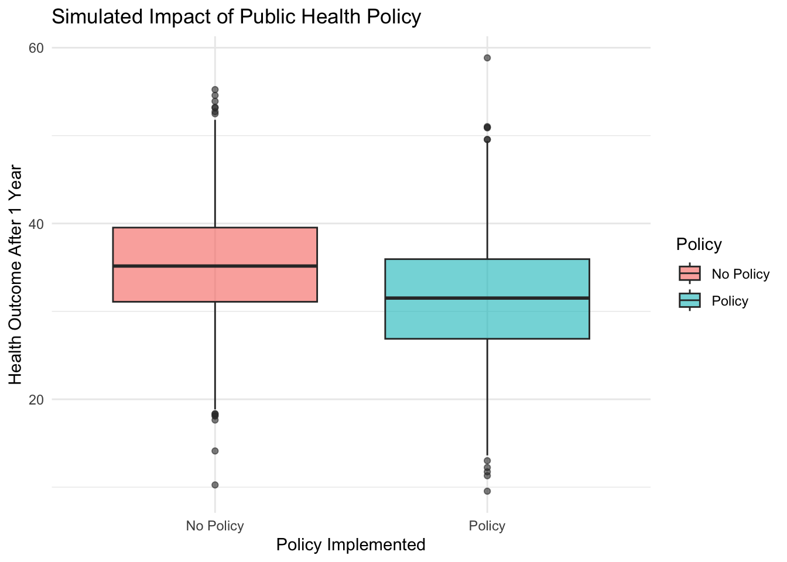
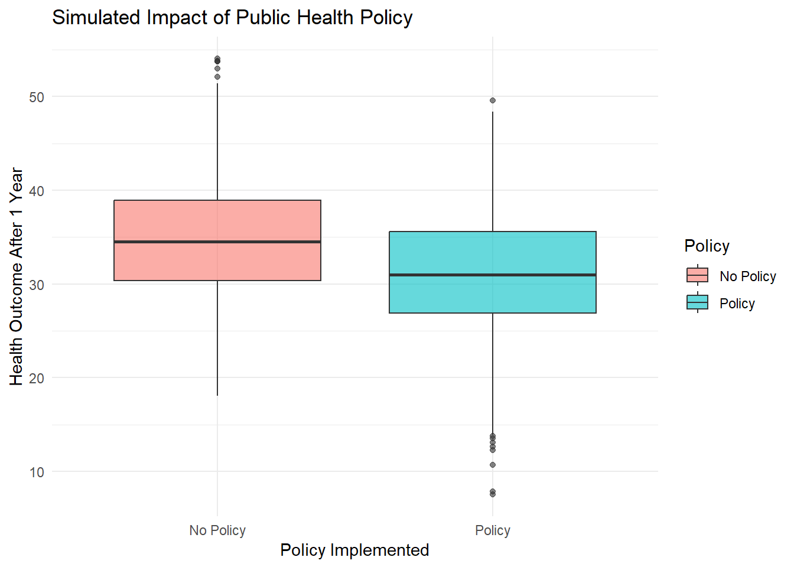
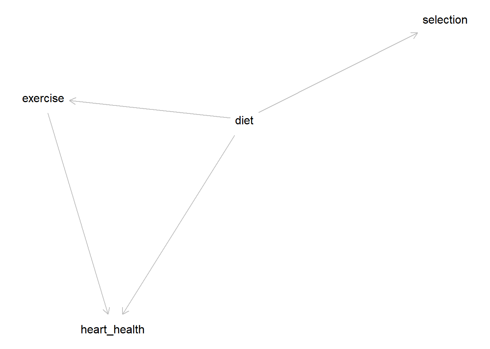
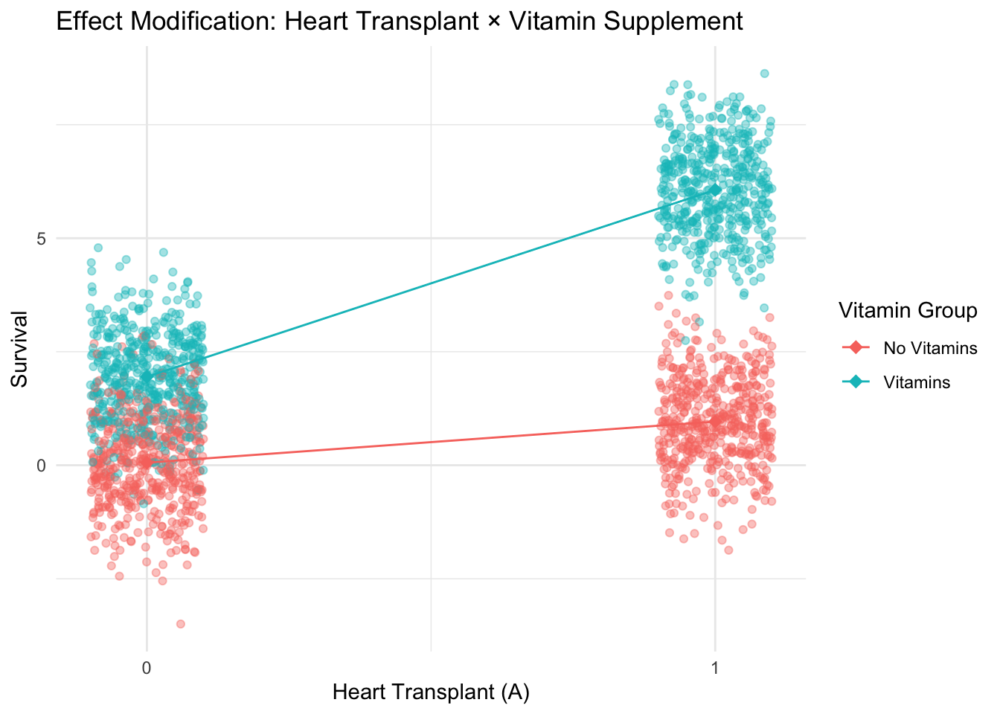

6 Confounding and Selection Bias
Class materials
Slides: Module 6
Recording: Module 6, Part 1
Recording: Module 6, Part 2
Textbook reading
Supplementary reading
Knol, M. J., & VanderWeele, T. J. (2012). Recommendations for presenting analyses of effect modification and interaction. International Journal of Epidemiology, 41(2), 514–520.
Real-world public health examples of effect modification
Topics Covered
- The form of selection bias
- How to adjust for selection bias
- The structure of confounding
- How to adjust for confounding
- Critical reading exercise: sources of confounding and selection bias in public health
6.1 The Form of Selection Bias
Selection bias occurs when the probability of being included in the study or analysis depends on a factor that affects the association between the treatment and the outcome. Selection bias occurs when we condition (by stratifying or controlling) on a collider or mediator. When we unintentionally condition on these causal structures, we make our estimates biased. Conditioning on a collider opens up a backdoor path, biasing our estimate. Conditioning on a mediator blocks a path that captures the effect an exposure can have on an outcome through the mediator, also biasing our estimate.
In our simulation, we are interested in studying the effect of having a high income on whether a person gets regular exercise or not. We also have data on healthcare visits for each patient, which is affected both by whether they have high income and whether they exercise. For this example, assume that we do not know the true effect of income on exercise, but in reality, there is no causal effect. Since we believe there is an effect, we will show this causal relationship in our DAG.
The DAG for this scenario is shown below.

We introduce selection bias by adjusting on healthcare visits (a collider) in our regression. By conditioning on healthcare visits, our estimated effect will contain the association from the backdoor path.
The code below estimates the effect of heart health on exercise using two models. The first model does not control for healthcare visits and unbiasedly estimates the true causal effect of 0. The second model controls for healthcare visits and suffers from selection bias.
set.seed(123)
n <- 20000
# Income and exercise are independent (no true causal effect for this example)
high_income <- rbinom(n, 1, 0.4) # 40% have high income
regular_exercise <- rbinom(n, 1, 0.3) # 30% exercise regularly
# Healthcare_visits is a collider of high_income and regular_exercise
healthcare_visits <- 2 + 1.5 * high_income + 1.2 * regular_exercise + rnorm(n, 0, 0.8)
df <- data.frame(
high_income = high_income,
regular_exercise = regular_exercise,
healthcare_visits = healthcare_visits
)
# Model 1 — No adjustment (baseline)
model_unadjusted <- lm(regular_exercise ~ high_income, data = df)
# Model 2 — Adjusting for the collider (bad)
model_adjusted_collider <- lm(regular_exercise ~ high_income + healthcare_visits, data = df)
# Extract coefficients
coef_unadjusted <- summary(model_unadjusted)$coefficients["high_income", "Estimate"]
coef_adjusted <- summary(model_adjusted_collider)$coefficients["high_income", "Estimate"]
# Compare results
cat("Coefficient without adjustment (true effect):", coef_unadjusted, "\n")## Coefficient without adjustment (true effect): 0.004749401## Coefficient with collider adjustment (biased): -0.3942755The previous scenario where we condition on a collider is more specifically known as collider bias. Had we conditioned on a mediator, this would have been mediator bias. In the example about the effect of exercise on diabetes risk, if we were to condition on weight loss when estimating our causal effect, we would block the causal path of exercise \(\rightarrow\) weight loss \(\rightarrow\) diabetes risk and not be able to estimate the effect of exercise on diabetes risk, mediated by weight loss.

6.2 How to Adjust for Selection Bias
Adjusting for selection bias is more challenging than adjusting for confounding, because selection bias arises when the sample being analyzed is not representative of the target population due to a systematic inclusion process. This often happens when selection into the dataset depends on variables related to both the exposure and the outcome, introducing a spurious association that distorts causal estimates. Unlike confounding, which can often be handled by conditioning on measured variables, selection bias may require more complex strategies such as inverse probability weighting (IPW), sensitivity analysis, or explicitly modeling the selection mechanism. The key to adjusting for selection bias is understanding why and how certain individuals are excluded or included in the analysis — and then incorporating that information to correct the bias.
6.3 The Structure of Confounding
Confounding occurs when an external variable influences both the exposure and the outcome, making it difficult to determine whether the observed association is truly causal. This third variable — the confounder — can create a misleading impression that the exposure causes the outcome, when in fact, the association may be driven entirely or partially by the confounder. The key structural feature of confounding is that the confounder must be related to both the exposure and the outcome. To obtain an accurate estimate of the exposure’s causal effect, researchers must adjust for confounding variables using methods like stratification, regression, or matching.
In our simulation, age acts as a confounder because it affects both smoking behavior and lung cancer risk. Older individuals are more likely to smoke and also more likely to develop lung cancer, which can make smoking appear more harmful (or even less harmful) than it actually is if age isn’t taken into account. The naive model, which includes only smoking, produces a biased estimate because it doesn’t separate the effect of smoking from the effect of age. The adjusted model includes both smoking and age and provides a more accurate estimate of smoking’s effect by accounting for this confounding influence. This example highlights how confounding can distort findings and why controlling for related background variables is essential in observational research. For this simulation, assume smoking has a true effect of 3 on lung cancer.
The DAG for this scenario is below:

set.seed(123)
n <- 2000
age <- rnorm(2000, mean = 50, sd = 10)
smoking <- 2 * age + rnorm(n)
lung_cancer <- 3 * smoking + 4 * age + rnorm(n)
genetic_marker <- rbinom(n, 1, prob = plogis(0.01 * smoking - 1))
df <- data.frame(
Age = age,
Smoking = smoking,
Lung_Cancer = lung_cancer,
Genetic_Marker = genetic_marker
)
model_naive <- lm(lung_cancer ~ smoking, data = df)
model_adjusted <- lm(lung_cancer ~ smoking + age, data = df)
coef_naive <- summary(model_naive)$coefficients["smoking", "Estimate"]
coef_adjusted <- summary(model_adjusted)$coefficients["smoking", "Estimate"]
coef_naive## [1] 4.995915## [1] 3.014671Through this simulation, we learned that controlling for confounders via adjusting for them in the regression model helps prevent our estimates from being biased. Practically, in the context of public health, there will always be unobserved confounders that we can’t control for. This makes it impossible to control for all confounders. This does not mean that it is impossible to have credible causal estimates. Instead of trying to get an unbiased estimate by controlling for all confounders (which is infeasible), researchers acknowledge that unobserved confounders exist and can affect their estimates. Through a process called sensitivity analysis researchers can observe how strong a confounder has to be in order to invalidate their results.
In the example above, our estimated effect after properly controlling for age is around 3. However, it is possible that we forgot to account for a genetic marker that is a confounder of smoking and lung cancer. In practice, it is infeasible to control for the genetic marker of each individual in our study, so we use sensitivity analysis to see how robust our estimates are. In the code below, we simulate how strong the association between genetic marker on smoking and the association between genetic marker and lung cancer has to be in order to invalidate our results. The heatmap shows the effect estimates for varying strengths of confounding on the exposure and outcome.
Our new DAG including the genetic marker would look like the following:

set.seed(123)
n <- 1000
age <- rnorm(n)
results <- data.frame()
a_vals <- seq(0, 10, by = 1) # strength of genetic_marker on smoking
b_vals <- seq(0, -20, by = -1) # strength of genetic_marker on lung_cancer
for (a in a_vals) {
for (b in b_vals) {
genetic_marker <- rbinom(n, 1, 0.5)
smoking_resid <- a * genetic_marker + rnorm(n)
smoking_resid <- as.numeric(scale(smoking_resid)) # Fix variance to 1 to avoid inflating variance of smoking
smoking <- 4 * age + smoking_resid
lung_cancer <- 3 * smoking + 4 * age + b * genetic_marker + rnorm(n)
df <- data.frame(lung_cancer, smoking, age)
model <- lm(lung_cancer ~ smoking + age, data = df)
est <- coef(summary(model))["smoking", "Estimate"]
se <- coef(summary(model))["smoking", "Std. Error"]
results <- rbind(results, data.frame(a = a, b = b,
smoking_estimate = est, se = se))
}
}
ggplot(results, aes(x = a, y = b, fill = smoking_estimate)) +
geom_tile() +
scale_fill_gradient(
low = "white", high = "Blue",
breaks = seq(3, -6, by = -1.5)
) +
labs(
x = "Strength of Confounder on Smoking",
y = "Strength of Confounder on Lung Cancer",
fill = "Smoking Effect",
title = "Effect of Smoking Estimate by Confounder Strength"
) +
theme_minimal() +
scale_y_reverse()
When identifying a causal effect by assuming conditional exchangeability, sensitivity analysis is incredibly important to defending claims of causality. For example, based off this graph, one could argue that the strength of the genetic marker is likely not strong enough to change our result that smoking increases the chance of lung cancer.
6.4 How to Adjust for Confounding
Adjusting for confounding is essential when estimating causal effects from observational data. Since confounders are variables that influence both the exposure and the outcome, failing to account for them can lead to biased and misleading conclusions. One of the most common ways to adjust for confounders is through multiple regression, where confounders are included as covariates in the model. Other methods include stratification, where analyses are performed within levels of the confounder, and matching, where exposed and unexposed individuals are paired based on similar values of the confounding variable. These approaches aim to isolate the effect of the exposure by holding confounders constant, thereby mimicking the balance achieved in randomized experiments.
In our simulation, we demonstrated adjustment for confounding using regression. The variable age was a confounder because it influenced both smoking and lung cancer. When we fit a naive model that only included smoking, the effect estimate was biased because it reflected both smoking’s and age’s contributions to lung cancer. By including age in the model as an additional predictor, we were able to adjust for its influence. This adjustment allowed us to estimate the effect of smoking on lung cancer more accurately, as if age were held constant. This simple regression approach illustrates a key principle in observational research: if you can measure the confounder and include it in your analysis, you can often remove its biasing effect and get closer to the true causal relationship.